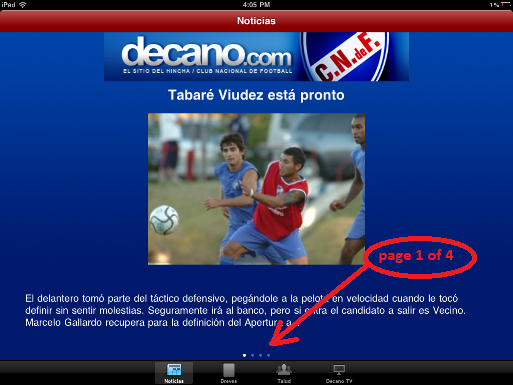
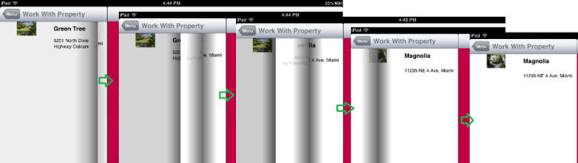
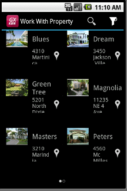
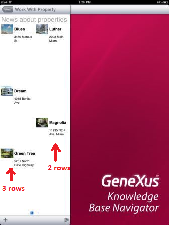
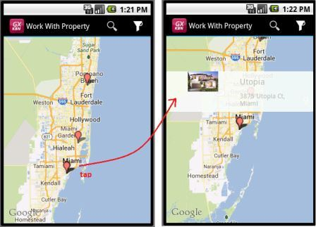
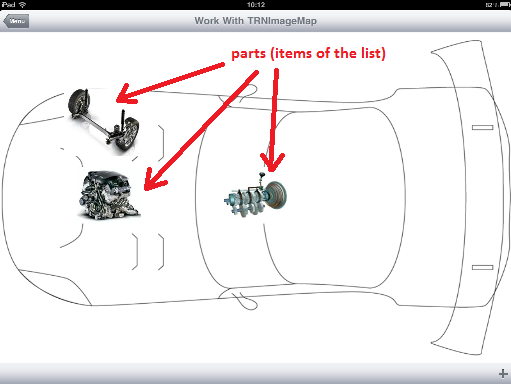
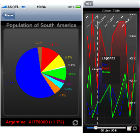
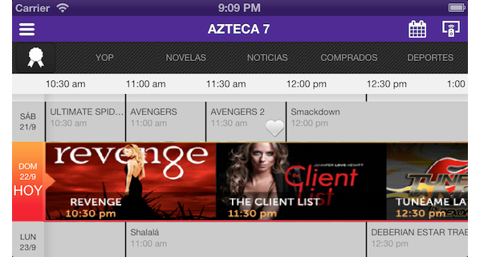

Want to show an ImageGallery and browse through it in a very intuitive way? Want to have a natural view of locations using a Map? Want to rate a product using a StarRating control instead of typing a value?
GeneXus provides these kinds of controls and more so you can build flexible and intuitive applications. Besides, you will be able to create your own custom controls! User controls will make it easy to create flexible and intuitive applications by taking advantage of most features currently available in smart devices.
User Controls like these can be included in GeneXus applications:
Probably, you've already imagined more such as various controls that differ in functionality and complexity. For this reason, we are developing an extensible control platform to let you integrate a broad set of controls.
There are two types of user controls for smart devices: Item and List.
The items user controls apply to single-valued items, such as:
The list ones apply to complex data types such as a collection, Structured Data Type or Data Provider object. Below are samples of this kind:
| Control Type |
Description |
Example |
| Paged Grid |
Shows one record of a list per page. This enables you to show more information and navigate through the list more easily. Also, by double-tapping, you can access the detailed view of the Item. See more... |
 |
| Leaves |
Offers a similar experience to turn the page of a book. Each grid item is shown on a single page. See more... |
 |
| Horizontal Grid |
Lets you show elements horizontally, instead of the usual vertical way for a Grid. Also, it lets you control the way the elements are shown, letting you choose the number of columns and rows we want to display by page. See more... |
 |
| Magazine Viewer |
Provides an experience similar to reading a newspaper, magazine, or catalog. Each page shows many articles (parts of them), that can be zoomed in with a touch (the equivalent of “continued on page X” of a printed newspaper version). The number of items shown could vary among columns. See more... |
 |
| Maps |
Provides a way for displaying locations using a map and interacting with them. For that, the grid needs to have a geolocation value for each item. See more... |
 |
| Image Map |
Lets you display a background image with regions identified by its coordinates {x, y} and a size. Each defined region can have an image to display on the coordinates defined to it with the defined size. Each region corresponds to one item on the list. See more... |
 |
| Charts |
Lets you display numeric information of a grid as a chart (pie or timeline). See more... |
 |
| Spark Line |
Often used to show high-density series of numbers. See more... |
|
| Matrix Grid |
To display data in two-dimensional grids (as of GeneXus X Evolution 3). See more... |
 |
Scope
Generators: Android, Apple, Angular
|